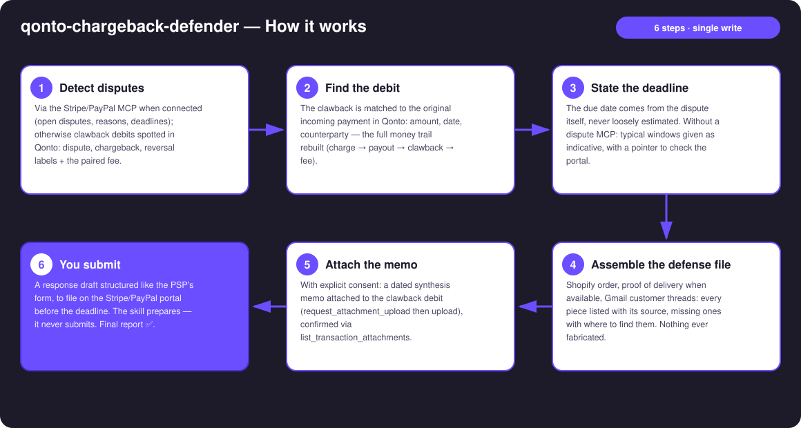
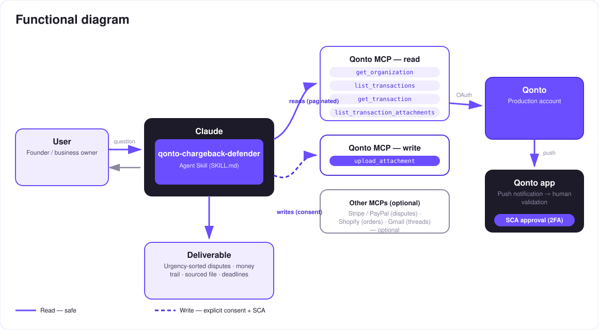

Payment disputes end-to-end: detection, debit found, sourced defense file, deadline — you submit.
A chargeback is a triple hit: the money pulled back out of the account, a fee on top (often €15–20, indicative), and a short window to respond (7–21 days) — and most merchants never respond at all. The skill turns a Qonto account into a defense desk:
Via the Stripe/PayPal MCP when connected (reasons, real deadlines); otherwise clawback debits spotted in Qonto: dispute / chargeback / reversal + fee.
The clawback matched to the original incoming payment: full money trail, charge → payout → clawback → fee.
Shopify order, proof of delivery, Gmail threads — every piece with its source, missing ones with where to find them.
A dated synthesis memo attached to the clawback transaction in Qonto (upload confirmed) — the debit carries its full story.
Would someone use this on a Monday morning? A chargeback notification is the Monday morning email you dread — this makes it a ten-minute task.
| Prerequisite | Detail | Required |
|---|---|---|
| Qonto production account | Adapts to any organization — get_organization first, nothing hardcoded | ✅ |
| Country | Universal: chargebacks follow card-network and PSP rules, not national tax law — identical behavior for every Qonto country | ℹ️ detected |
| Qonto MCP connected | Official connector (claude.ai / Claude Desktop), OAuth login | ✅ |
| Stripe / PayPal MCP | Authoritative source for disputes and deadlines. Without it: Qonto-only mode — detection + money trail + checklist, already useful | ⭕ recommended |
| Shopify · Gmail MCPs | File enrichment (order, tracking, threads) — detected dynamically, announced when absent | ⭕ |

dispute / chargeback / reversal and variants), usually paired with a same-day fee debit from the same PSPemitted_at, not settled_at (1–2 days of drift)list_transaction_attachments checked before any upload is reported as done
The integrity model: the attached memo is a dated synthesis citing the source pieces (system · identifier · date · what each piece proves) — never a fabricated document. And submission stays human: the skill prepares everything, the user submits on the Stripe/PayPal portal. Never presented as filed.
| Reason code | What wins | Where the skill finds it |
|---|---|---|
| Product not received | Proof of delivery / "delivered" tracking | Shopify (fulfillment + tracking) |
| Fraudulent / unrecognized | Matching billing-shipping addresses, returning customer, order history | Shopify + Stripe (charge details) |
| Product not as described | Product listing, customer threads, return policy offered | Shopify + Gmail |
| Duplicate / already refunded | The refund already issued — the strongest possible answer | Qonto (refund transaction) + Stripe |
| Subscription canceled | Cancellation date vs charge date, terms, threads | Stripe + Gmail |
| Output | Format | When |
|---|---|---|
| Conversation reply | Markdown tables: disputes (urgency-sorted), money trail, evidence checklist ✅/⚠️ | Always — the baseline |
| Defense memo | Dated, sourced synthesis attached to the clawback transaction in Qonto | Per dispute, explicit consent only |
| Response draft | The argument structured like the PSP's response form, ready to paste | As soon as the reason is known |
The ≤ 3-minute demo attached to the PR walks through: the problem (money pulled back + fee + deadline) → detection → a four-piece defense file, assembled and sourced → the memo attached to the transaction → "all that's left is to submit". The detailed shooting script is kept internal (out of the repo).
| Idea | Effort | Note |
|---|---|---|
| Winnability hints per reason code (typical success rates) | Medium | Helps prioritize when several disputes land at once |
| Post-dispute follow-up: detect the re-credit when won and close the memo | Low | Reuses the detection engine |
| Deadline reminders through a calendar MCP (detected dynamically) | Low | Optional multi-MCP enrichment, in the spirit of the kickoff |
Synergy with qonto-shopify-bridge (order-to-payout reconciliation) | Low | The original debit is already matched |
Synergy with qonto-fraud-sentinel (unusual debits as clawback candidates) | Low | Cross-detection |
list_transaction_attachments confirms it